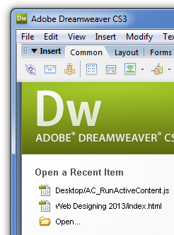

බහුමාධ්ය තාක්ෂණය සහිත වෙබ් අඩවි නිර්මාණය
බහුමාධ්ය තාක්ෂණය සහිත වෙබ් අඩවි නිර්මාණයHTML භාෂාව තුළ සම්මත කේතයන් යොදා ගනු ලබයි. HTML ආකාරයට සකස් කරනු ලබන වෙබ් පිටු ඕනෑම වර්ගයක පරිගණකයක හෝ මෙහෙයුම් පද්ධතියක භාවිත කළ හැකිය. ඊට අමතරව වදන් සැකසුමක ඇති හැකියාවන් වන විවිධ හැඩතලවල හා විවිධ ප්රමාණයේ ලොකු කුඩා අකුරු නිර්මාණය කිරීම, මාතෘකා හා උප මාතෘකා නිර්මාණ කිරීම, ලේඛණ, වගු, වට්ටෝරු ආදිය එක්කල හැකිය. ඊට අමතරව රූප, ශබ්ද, චලන රූප හා වීඩියෝ පට වැනි බහුමාධ්ය අන්තර්ගතයන් ඇතුළු කිරීම වැනි කාර්යයන්ද HTML තුළ කල හැකිය.
නිදහස් වෙබ් අඩවිවලින් තොරතුරු සොයා යමින් එම තොරතුරු තම පරිගණක යන්ත්රයන්ට ලබා දෙන වෙබ් යෙදුම් නොමිලේ ලබා ගත හැකිය. මේ සඳහා FireFox, Internet Explorer, Safari, Google Chorme වැනි වෙබ් බ්රව්සරයන් ඉදිරිපත්ව සිටී. මෙම බ්රව්සරයන් පහසුවෙන් භාවිතා කිරීමට හැකිවන පරිදි නිර්මාණය වී ඇත. මේවා මගින් සලසා දී ඇති පහසුකම් කිහිපයකි.
විශේෂිත වූ ක්රම වලින් සකස් කරන ලද ඡේද, අක්ෂර සහ චිත්ර හැසිරවීමේ දී සජීවී ගුවන්විදුලි නාලිකා හෝ සජීවී රූපවාහිනී නලිකා ඇසීමට නැරඹීමට වෙබ් බ්රව්සරය මගින් හැකිය. එලෙසම සජීවී කතා කිරීම, අන්තර්ජාල දුරකතන සාකච්ඡා හා ප්රවෘත්ති මණ්ඩල සහ ටෙලි සම්මේලන හැසිරවීමට ද හැකියාව ඇත.
මෙය යොදා ගනිමින් වෙබ් අඩවි නිර්මාණයේ දී HTML වැනි උපදේශ කේතයන් යොදා ගනී. මෙම කේතයන් දැකිවීම සඳහා යොදා ගන්නා යෙදුම් කිහිපයකි.
Notepad:
Microsoft ආයතනය මගින් Windows මෙහෙයුම් පද්ධතිය සමග 1985 සිට නොමිලේ බෙදා හරිනු ලබන මෙවලමකි.
G-Edit:
යුනිකෝඩ කේත ක්රමය භාවිතා කරයි.
Text-Edit:
Making tosh සමග නොමිලේ බෙදා හරින්නකි.
HTML කේතයන් පහසුවෙන් හැසිරවිය හැකි ආකාරයට නිර්මාණය කර ඇති මෙම මෙවලම මගින් කලින් සකස් කරනු ලැබූ සැලසුම් අච්චු භාවිතා කල හැකි අතර විශේෂයෙන්ම
උපදේශ හෝ අනු උපදේශ කේත පහසුවෙන් හඳුනාගත හැකි වන ආකාරයට විවිධ වරිණයෙන් දක්වා ඇත. මෙහි දී HTML භාවිතා කරන්නේ නම් ඒ සඳහා පහසුකම් සලසන අතර ඔබ JAVA වැනි භාෂාවක්
භාවිතා කරන්නේ නම් ඒ සඳහා වූ පහසුකම්වලින් යුක්ත අතුරු මුහුණත් ඉදිරිපත් කරයි.
මේ සඳහා උදාහරණ ලෙස Edit+, Homesite, Notepad++ ගත හැක.
HTML කේත පිළිබඳ පුළුල් දැනුමක් නොමැති ආධුනිකයන් සඳහා වැඩි ආයාසයකින් තොරව සරළ වෙබ් අඩවි නිර්මාණය කිරීම සඳහා මෙම යෙදුම් යොදා ගනීයි. මෙවැනි වෙබ් නිර්මාණ
යෙදුම් වෙළඳපොලෙන් මිල දී ගැනීමට සිදු වේ. එවැනි යෙදුම් කිහිපයක් පහත දැකිවේ.

Macromedia Dreamweaver Logo | Interface
ColdFusion Logo | Interface
Expression Web Logo | Interface
ShavePoint Designer
Visual Studio Logo | Interface
Visual Web Developer Experss Logo | Interface